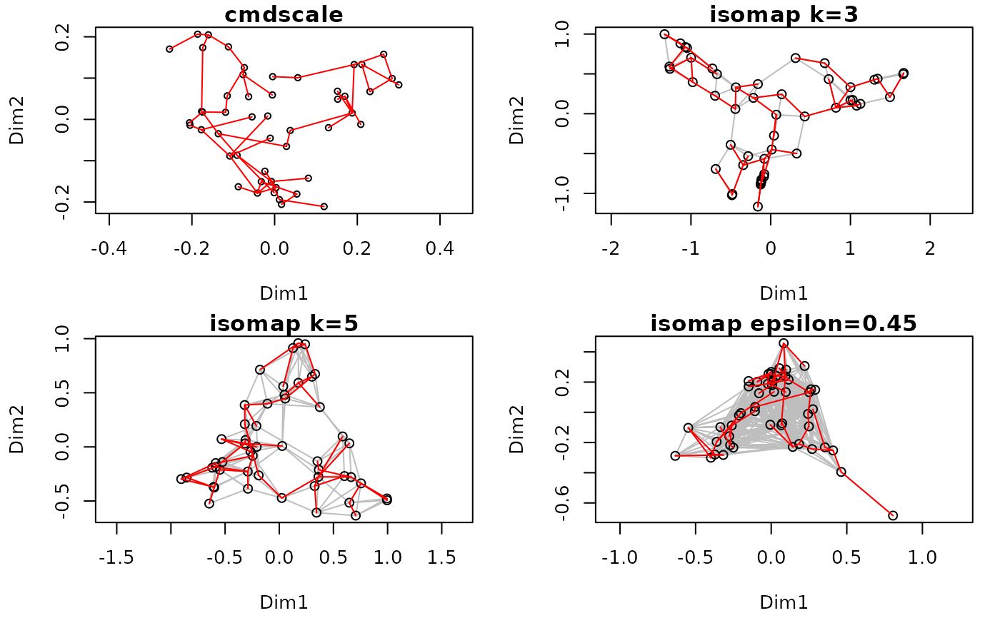
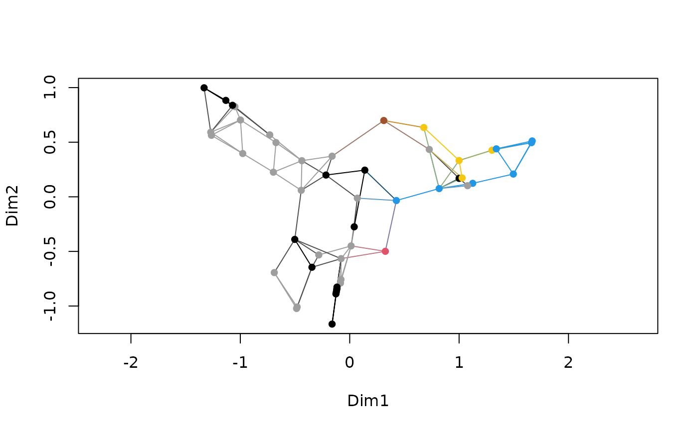

isomap.RdThe function performs isometric feature mapping which consists of three simple steps: (1) retain only some of the shortest dissimilarities among objects, (2) estimate all dissimilarities as shortest path distances, and (3) perform metric scaling (Tenenbaum et al. 2000).
Dissimilarities.
Number of axes in metric scaling (argument k in
cmdscale).
Shortest dissimilarity retained.
Number of shortest dissimilarities retained for a point. If
both epsilon and k are given, epsilon will be used.
Method used in stepacross to estimate the
shortest path, with alternatives "shortest" and "extended".
What to do if dissimilarity matrix is
fragmented. If TRUE, analyse the largest connected group,
otherwise stop with error.
An isomap result object.
Number of axes displayed.
Draw the net of retained dissimilarities.
Colour of drawn net segments. This can also be a vector that is recycled for points, and the colour of the net segment is a mixture of joined points.
Plot observations either as "points",
"text" or use "none" to plot no observations. The
"text" will use ordilabel if net = TRUE
and ordiplot if net = FALSE, and pass
extra arguments to these functions.
Other parameters passed to functions.
The function isomap first calls function isomapdist for
dissimilarity transformation, and then performs metric scaling for the
result. All arguments to isomap are passed to
isomapdist. The functions are separate so that the
isompadist transformation could be easily used with other
functions than simple linear mapping of cmdscale.
Function isomapdist retains either dissimilarities equal or shorter to
epsilon, or if epsilon is not given, at least k
shortest dissimilarities for a point. Then a complete dissimilarity
matrix is reconstructed using stepacross using either
flexible shortest paths or extended dissimilarities (for details, see
stepacross).
De'ath (1999) actually published essentially the same method before
Tenenbaum et al. (2000), and De'ath's function is available in function
xdiss in non-CRAN package mvpart. The differences are that
isomap introduced the k criterion, whereas De'ath only
used epsilon criterion. In practice, De'ath also retains
higher proportion of dissimilarities than typical isomap.
The plot function uses internally ordiplot,
except that it adds text over net using ordilabel. The
plot function passes extra arguments to these functions. In
addition, vegan3d package has function
rgl.isomap to make dynamic 3D plots that can
be rotated on the screen.
Function isomapdist returns a dissimilarity object similar to
dist. Function isomap returns an object of class
isomap with plot and summary methods. The
plot function returns invisibly an object of class
ordiplot. Function scores can extract
the ordination scores.
De'ath, G. (1999) Extended dissimilarity: a method of robust estimation of ecological distances from high beta diversity data. Plant Ecology 144, 191--199
Tenenbaum, J.B., de Silva, V. & Langford, J.C. (2000) A global network framework for nonlinear dimensionality reduction. Science 290, 2319--2323.
Tenenbaum et al. (2000) justify isomap as a tool of unfolding a
manifold (e.g. a 'Swiss Roll'). Even with a manifold structure, the
sampling must be even and dense so
that dissimilarities along a manifold are shorter than across the
folds. If data do not have such a manifold structure, the results are
very sensitive to parameter values.
The underlying functions that do the proper work are
stepacross, distconnected and
cmdscale. Function metaMDS may trigger
stepacross transformation, but usually only for
longest dissimilarities. The plot method of vegan
minimum spanning tree function (spantree) has even
more extreme way of isomapping things.
## The following examples also overlay minimum spanning tree to
## the graphics in red.
op <- par(mar=c(4,4,1,1)+0.2, mfrow=c(2,2))
data(BCI)
dis <- vegdist(BCI)
tr <- spantree(dis)
pl <- ordiplot(cmdscale(dis), main="cmdscale")
#> species scores not available
lines(tr, pl, col="red")
ord <- isomap(dis, k=3)
ord
#>
#> Isometric Feature Mapping (isomap)
#>
#> Call:
#> isomap(dist = dis, k = 3)
#>
#> Distance method: bray shortest isomap
#> Criterion: k = 3
pl <- plot(ord, main="isomap k=3")
lines(tr, pl, col="red")
pl <- plot(isomap(dis, k=5), main="isomap k=5")
lines(tr, pl, col="red")
pl <- plot(isomap(dis, epsilon=0.45), main="isomap epsilon=0.45")
lines(tr, pl, col="red")

par(op)
## colour points and web by the dominant species
dom <- apply(BCI, 1, which.max)
## need nine colours, but default palette has only eight
op <- palette(c(palette("default"), "sienna"))
plot(ord, pch = 16, col = dom, n.col = dom)

palette(op)